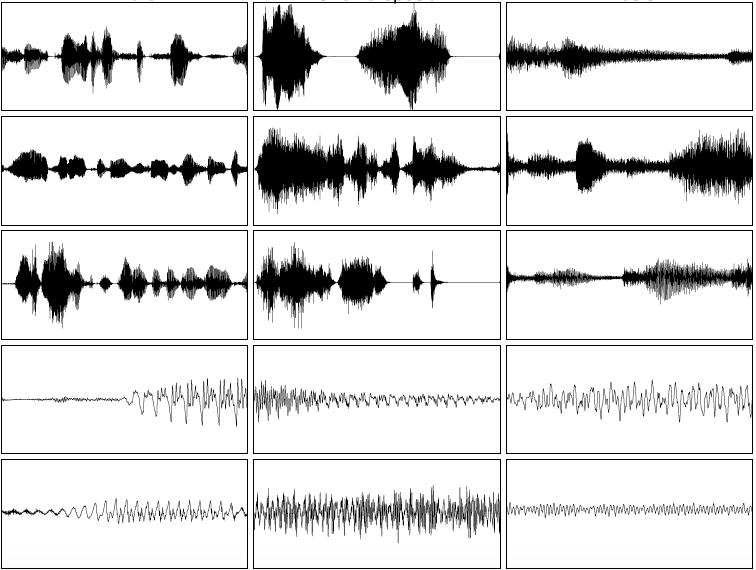
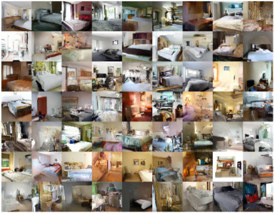
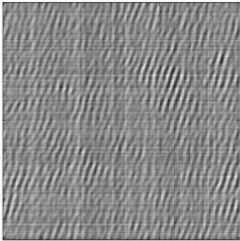

<div class="blurb">
	<!--img style="float: right;" src="/images/mypic.jpg" width="30%"></img-->
<!-- 	<h2>Hi there, I'm Kundan Kumar!</h2>
	<p>I am an aspiring <a href="https://en.wikipedia.org/wiki/Artificial_intelligence">AI</a> researcher currently enrolled in B. Tech. - M. Tech. dual degree at <a href="http://www.iitk.ac.in/">IIT Kanpur</a>.
	Since the first week of June 2016, I am visiting <a href="https://mila.umontreal.ca/en/">MILA,</a> <a href="http://www.umontreal.ca/english/">University of Montreal</a> as an intern. I am currently advised by Yoshua Bengio and Vinay P. Namboodiri for my masters thesis. I wish to develop machines capable of perceiving, reasoning and learning as humans do. 
	I visited <a href="http://vis-www.cs.umass.edu/">Computer Vision lab, UMASS</a>, Amherst during May-July
	2015 where I worked with <a href="http://people.cs.umass.edu/~smaji/">Prof. Subhransu Maji</a><br>
	Read more about <a href="/about.html">my life...</a></p>
	<p>Recently, I have been exploring various projects related to Computer Vision and Machine Learning. 
	I have used deep learning techniques while working on many of the problems and am very excited about it.
	Project report on visual question answering may be found <a href="http://home.iitk.ac.in/~kundan/cs498a/report.pdf">here</a>. I worked on relation extraction 
	using knowledge vectors as a course project. Its report may be found <a href="http://home.iitk.ac.in/~kundan/report_365.pdf">here</a>.</p>
	
	<p>Earlier this year, my team won Xerox 
	Research Innovation Challenge. The competition blog post lies <a href="https://simplifywork.blogs.xerox.com/2016/02/15/can-machine-learning-prevent-death-in-the-icu/">here</a>.</p>
	
	Details of my academic profile and courses done may be found in my <a href="/cv.pdf">CV</a>. -->
	<table width="840" cellspacing="0" cellpadding="20" border="0" align="center">
  	<tbody>
		<tr><td>

		<p align="center"><font size="7">Kundan Kumar</font><br>
    		<b>Email</b>:
    		<font id="email" style="display:inline;">kundankumar2510@gmail.com</font>
  		</p>
		<table width="100%" cellspacing="0" cellpadding="20" border="0" align="center">
			
  			<tbody><tr>
    			<td width="67%" valign="middle" align="justify">
				<p>I am a final year B. Tech. - M. Tech. dual degree student in Computer Science and Engineering departement at 
					<a href="http://www.cse.iitk.ac.in/">IIT Kanpur</a> 
				<p>Currently, I am visiting <a href="https://mila.umontreal.ca/en/">MILA</a>, 
				<a href="http://www.umontreal.ca/english/">University of Montreal</a> as an intern. I am
					advised by <a href="http://www.cse.iitk.ac.in/users/vinaypn/">Vinay P. Namboodiri</a> and <a href="http://www.iro.umontreal.ca/~bengioy/yoshua_en/index.html"> 
					Prof. Yoshua Bengio </a> for my masters thesis. </p>

				<p>I visited <a href="http://vis-www.cs.umass.edu/">Computer Vision lab, UMASS</a>, Amherst
					in summers 2015 where I worked with 
					<a href="http://people.cs.umass.edu/~smaji/">Prof. Subhransu Maji</a></p>

				<p align="center">
					<a href="#">CV</a> | <a href="https://github.com/kundan2510">Github</a> | 
					<a href="https://www.linkedin.com/in/kundan2510"> LinkedIn </a>
				</p>
    			</td>

    			<td width="33%">
				<a href="images/mypic_cropped.jpg">
				</a>
			</td>
  			</tr></tbody>
		</table>
		<table width="100%" cellspacing="0" cellpadding="20" border="0" align="center">
			  <tbody><tr><td>
			    <sectionheading>News</sectionheading>
			    <ul>
			    <li> Two papers (<a href="#SAMPLERNN">sampleRNN</a> and <a href="#PIXELVAE">pixelVAE</a>) are on arXiv.
			    </li>
			    <li> <a href="#TEXTURE">Paper</a> explaining texture generation networks accepted at ICASSP, 2017.
			    </li>
			    <li>
				    In January 2016, my team won Xerox Research Innovation Challenge. The competition blog post lies <a href="https://simplifywork.blogs.xerox.com/2016/02/15/can-machine-learning-prevent-death-in-the-icu/">here</a>.
		 	    </li>

			    </ul>
			  </td></tr>
			</tbody>
		</table>
		<table width="100%" cellspacing="0" cellpadding="20" border="0" align="center">
		  <tbody><tr><td><sectionheading>Publications</sectionheading></td></tr>
		</tbody></table>
		<table width="100%" cellspacing="0" cellpadding="20" border="0" align="center">

		  	<tbody><tr>
    				<td width="33%" valign= "center" align="center"><a href="images/sampleRNN.png"></a>
    				</td>
				<td width="67%" valign= "top">
				      <p><a href="https://arxiv.org/abs/1612.07837" id="SAMPLERNN">
					
				      <heading>SampleRNN: An Unconditional End-to-End Neural Audio Generation Model</heading></a><br>
					      Soroush Mehri, <strong>Kundan Kumar</strong>, Ishaan Gulrajani, Rithesh Kumar, Shubham Jain, Jose Sotelo, Aaron Courville, Yoshua Bengio<br>
				      <em>submitted to ICLR</em>, 2017
				      <br></p>

				      <div class="paper" id="sampleRNN">
				      <a href="https://arxiv.org/pdf/1612.07837v1.pdf">pdf</a> |
				      <a href="https://arxiv.org/abs/1612.07837">arXiv</a> |
					<a href="https://github.com/soroushmehr/sampleRNN_ICLR2017">code</a> |
					<a href="https://soundcloud.com/samplernn/sets"> samples</a>
				      </div>
				</td>
  				</tr>
				
				<tr>
    				<td width="33%" valign="center" align="center"><a href="images/pixelvae.png"></a>
    				</td>
				<td width="67%" valign="top">
				      <p><a href="https://arxiv.org/abs/1611.05013" id="PIXELVAE">
				      
				      <heading>PixelVAE: A Latent Variable Model for Natural Images</heading></a><br>
					      Ishaan Gulrajani, <strong>Kundan Kumar</strong>, Faruk Ahmed, Adrien Ali Taiga, Francesco Visin, David Vazquez, Aaron Courville<br>
				      <em>submitted to ICLR</em>, 2017
				      <br></p>

				      <div class="paper" id="pixelVAE">
				      <a href="https://arxiv.org/pdf/1611.05013v1.pdf">pdf</a> |
				      <a href="https://arxiv.org/abs/1611.05013">arXiv</a>
				      </div>
				</td>
  				</tr>
				
				<tr>
    				<td width="33%" valign="center" align="center"><a href="images/random_weights.png"></a>
    				</td>
				<td width="67%" valign="top">
				      <p><a href="https://arxiv.org/abs/1612.06070" id="TEXTURE">
				      
				      <heading>On Random Weights for Texture Generation in One Layer Neural Networks</heading></a><br>
					      Mihir Mongia, <strong>Kundan Kumar</strong>, Akram Erraqabi, Yoshua Bengio<br>
				      <em>Accepted at ICASSP</em>, 2017
				      <br></p>

				      <div class="paper" id="texture">
				      <a href="https://arxiv.org/pdf/1612.06070v1.pdf">pdf</a> |
				      <a href="https://arxiv.org/abs/1612.06070">arXiv</a>
				      </div>
				</td>
  				</tr>
			</tbody></table>
			<table width="100%" cellspacing="0" cellpadding="20" border="0" align="center">
    			<tbody><tr><td><br><p align="right"><font size="2">
				Template: <a href="https://people.eecs.berkeley.edu/~pathak/">this</a>, <a href="http://www.cs.berkeley.edu/%7Ebarron/">this</a>, <a href="http://www.cs.berkeley.edu/%7Eakar/">this</a>, <a href="http://www.cs.berkeley.edu/%7Esgupta/">this</a> and <a href="http://jeffdonahue.com/">this</a>
    			</font></p></td></tr>
			</tbody></table>
		</td></tr></tbody></table>
	
</div><!-- /.blurb -->
